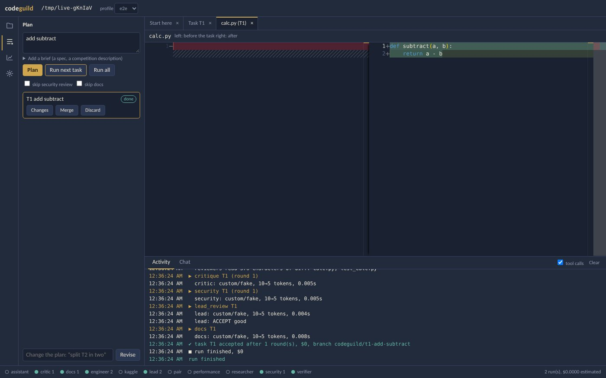

codeguild: an AI engineering team for your codebase, on any budget
A tool where AI agents plan, write, test, review and document code changes on a real repository. It started as guild and is now called codeguild. Every seat can be filled by a free local model or a paid one, depending on what you can spend.
The problem
AI coding tools are good at producing code quickly. They are less good at making sure that code is safe to merge, and most assume you can pay for the best model on every step. I wanted a tool that checks its own work and still runs on a laptop with free local models.
How it works
You give it a goal. A Lead agent breaks it into tasks. For each task:
- The Engineer implements the change on its own git branch.
- The Verifier runs your real test suite. The tests are run by the tool, not by a model, so a pass is a real pass.
- The Critic and the Security reviewer read the change and push back. The Engineer revises, up to a set number of rounds.
- The Lead signs off and the Writer updates the documentation.
- Nothing is merged to main by the tool. You review the branch and merge it yourself.

Built for weak and cheap models
- Roles are YAML files. Each one is a prompt, a model slot and a set of tool permissions. You add or change a role without touching code.
- Fallback chains. Every slot lists models in order. If one is unreachable or unpaid, the next is used. After repeated failures the Engineer is moved to a stronger model.
- Validated outputs. Every reply is checked against a schema. A malformed reply is sent back with the error to be repaired, so a weak model degrades gracefully.
- Hardware-aware setup. The setup wizard reads your GPU memory and RAM and picks models that fit.
- Works with many providers. Any OpenAI-compatible endpoint, plus Anthropic natively.
Safety
- Tools can only touch files inside the project folder.
- Reviewers are read-only. The Writer can only edit Markdown.
- API keys are removed from the environment of every subprocess.
- A review that fails to parse counts as "request changes", never as silent approval.
- An optional Docker sandbox runs commands with no network.
Tracing and cost
Every model call, tool call, decision and test run is written to a JSONL trace with token counts. A cost command shows where the money went, per role. The same habit of tracing everything comes from my research project, where traces were the raw data.